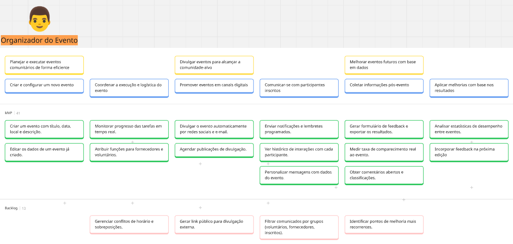
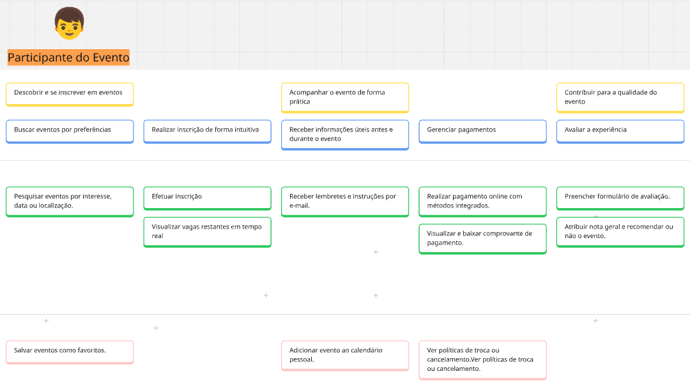
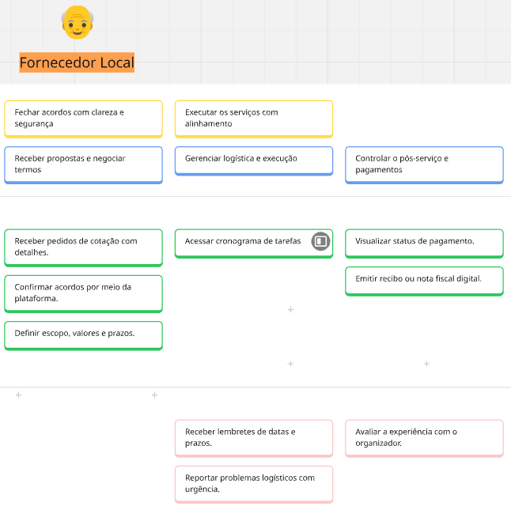
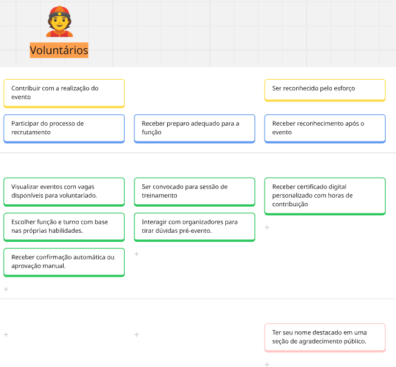

User Story Mapping (USM)
Sistema de Gestão de Eventos "ComunEventos"
Este documento apresenta a aplicação da técnica de User Story Mapping (USM) para planejar o desenvolvimento do sistema "ComunEventos". O USM organiza um backlog de produto em uma representação visual e estruturada, focada na jornada do usuário. O mapa mostra a "espinha dorsal" do produto e detalha as funcionalidades em releases incrementais.
1. Personas do ComunEventos
| Persona | O que faz | O que espera |
|---|---|---|
| Organizador do Evento | Planeja, promove e gerencia todos os aspectos de um evento. | Uma plataforma centralizada para gerenciar inscrições, pagamentos, comunicação e logística. |
| Participante do Evento | Compra ingressos e participa dos eventos. | Um processo de inscrição simples, acesso fácil à programação e uma boa experiência geral. |
| Patrocinador do Evento | Apoia financeira o evento em troca de publicidade. | Visibilidade clara durante o evento e relatório sobre o impacto da sua participação |
| Fornecedor Local | Oferece serviços essenciais para eventos catering, equipamentos, etc.. | Um canal para se conectar com organizadores, divulgar serviços e gerenciar contratações. |
| Voluntário do Evento | Doa seu tempo e habilidades para apoiar a execução de eventos. | Um sistema para encontrar oportunidades, se inscrever para turnos e receber tarefas. |
Organizador do Evento

| ID | Título da US | História de Usuário | Critérios de Aceitação |
|---|---|---|---|
| US01 | Criar um evento com título, data, local e descrição | Como organizador, quero criar um evento com título, data, local e descrição para iniciar o planejamento. | - O formulário deve conter campos obrigatórios de título, data, local e descrição. - O sistema deve validar o preenchimento de todos os campos antes de permitir a criação do evento. -Após a criação, o evento deve aparecer imediatamente na lista do organizador. |
| US02 | Editar os dados de um evento já criado | Como organizador, quero editar os dados de um evento já criado para atualizar informações quando necessário. | |
| US03 | Monitorar progresso das tarefas em tempo real | Como organizador, quero monitorar o progresso das tarefas em tempo real para garantir que tudo está no prazo. | Como organizador, quero criar um evento com título, data, local e descrição para iniciar o planejamento. |
| US04 | Atribuir funções para fornecedores e voluntários | Como organizador, quero atribuir funções para fornecedores e voluntários para organizar melhor a execução. | |
| US05 | Divulgar o evento automaticamente por redes sociais e e-mail | Como organizador, quero divulgar o evento automaticamente para alcançar mais participantes. | - O sistema deve permitir vincular redes sociais e configurar canais de e-mail. - A publicação deve ocorrer automaticamente após agendamento ou ativação manual. - O organizador deve receber uma notificação de sucesso ou erro da publicação. |
| US06 | Agendar publicações de divulgação | Como organizador, quero agendar publicações para manter presença constante nas redes. | |
| US07 | Enviar notificações e lembretes programados | Como organizador, quero enviar notificações programadas para manter os participantes informados. | - O sistema deve permitir selecionar data e hora para envio das notificações. - Os participantes devem receber notificações por e-mail ou push com as informações do evento. - O sistema deve exibir histórico das notificações enviadas. |
| US08 | Ver histórico de interações com cada participante | Como organizador, quero ver o histórico de interações para entender o engajamento de cada pessoa. | |
| US09 | Personalizar mensagens com dados do evento | Como organizador, quero personalizar mensagens com informações específicas para torná-las mais eficazes. | |
| US10 | Gerar formulário de feedback e exportar os resultados | Como organizador, quero gerar e exportar um formulário de feedback para avaliar a satisfação dos participantes. | |
| US11 | Medir taxa de comparecimento real ao evento | Como organizador, quero saber quantos inscritos realmente compareceram para avaliar o engajamento real e ajustar estratégias de participação. | |
| US12 | Obter comentários abertos e classificações | Como organizador, quero acessar feedback qualitativo e quantitativo para implementar melhorias em eventos futuros. | |
| US13 | Analisar estatísticas de desempenho entre eventos | Como organizador, quero comparar o desempenho entre eventos para saber o que está funcionando. | - O sistema deve exibir gráficos com métricas como: inscritos, comparecimento, avaliações e engajamento. - Deve ser possível filtrar comparações por data, tipo de evento ou local. - As estatísticas devem ser exportáveis em formato PDF ou CSV. |
| US14 | Incorporar feedback na próxima edição | Como organizador, quero usar feedback para melhorar os próximos eventos. |
Participante do Evento

| ID | Funcionalidade | História de Usuário | Critérios de Aceitação |
|---|---|---|---|
| US15 | Pesquisar eventos por interesse, data ou localização | Como participante, quero buscar eventos por interesse, data ou local para encontrar os que me interessam. | - O sistema deve permitir busca por palavra-chave, local e data. - A busca deve exibir resultados em lista com título, data e local. - A busca deve retornar apenas eventos públicos e ativos. |
| US16 | Efetuar inscrição | Como participante, quero me inscrever de forma rápida para garantir minha participação. | - O botão de inscrição deve estar visível para eventos com vagas disponíveis. - Após inscrição bem-sucedida, o participante deve receber confirmação por e-mail. - O evento inscrito deve aparecer na área pessoal do participante. |
| US17 | Visualizar vagas restantes em tempo real | Como participante, quero saber se ainda há vagas disponíveis antes de me inscrever para não perder tempo tentando acessar eventos lotados. | |
| US18 | Receber lembretes e instruções por e-mail | Como participante, quero receber lembretes e instruções antes do evento para não esquecer e chegar preparado. | |
| US19 | Realizar pagamento online com métodos integrados | Como participante, quero pagar com facilidade usando métodos online para garantir minha inscrição sem complicações. | - O sistema deve oferecer ao menos duas formas de pagamento (ex: Pix e cartão). - O pagamento deve gerar confirmação imediata ou mensagem de erro. - O sistema deve registrar a transação na área do participante. |
| US20 | Visualizar e baixar comprovante de pagamento | Como participante, quero acessar meu comprovante após o pagamento para ter registro formal da minha participação. | |
| US21 | Preencher formulário de avaliação | Como participante, quero avaliar o evento para dar meu feedback. | |
| US22 | Atribuir nota geral e recomendar ou não o evento | Como participante, quero indicar se gostei do evento e se o recomendaria para contribuir com a avaliação e reputação dos organizadores. |
| |
Fornecedor Local

| ID | Funcionalidade | História de Usuário | Critérios de Aceitação |
|---|---|---|---|
| US23 | Receber pedidos de cotação com detalhes | Como fornecedor, quero receber pedidos claros para avaliar viabilidade e custo. | - O pedido de cotação deve conter: tipo de serviço, data do evento, quantidade, local e horário estimado. - O sistema deve permitir visualizar o pedido em um painel e responder com proposta. - O pedido deve ser recebido via notificação ou painel central do fornecedor. |
| US24 | Confirmar acordos por meio da plataforma | Como fornecedor, quero confirmar acordos online para garantir segurança nas contratações. | |
| US25 | Definir escopo, valores e prazos | Como fornecedor, quero definir escopo e prazos para alinhar expectativas. | |
| US26 | Acessar cronograma de tarefas | Como fornecedor, quero ver o cronograma para me organizar para o evento. | |
| US27 | Visualizar status de pagamento | Como fornecedor, quero acompanhar o status do pagamento após a entrega para garantir previsibilidade financeira. | - O sistema deve mostrar se o pagamento está pendente, processando ou concluído. - O status deve estar disponível em tempo real após a finalização do serviço. - Deve haver uma data estimada de pagamento visível junto ao status. |
| US28 | Emitir recibo ou nota fiscal digital | Como fornecedor, quero emitir documentos fiscais diretamente pela plataforma para facilitar minha formalização e contabilidade. |
Patrocinador do Evento
| ID | Tírulo da US | História de Usuário | Critérios de Aceitação |
|---|---|---|---|
| US29 | Ver dados históricos de eventos anteriores | Como patrocinador, quero visualizar dados de eventos anteriores para tomar decisões de apoio. | - O sistema deve exibir uma lista de eventos passados com número de participantes, avaliações e alcance. - Os dados devem incluir tipo de público e área de atuação dos eventos anteriores. - Os eventos listados devem ser filtráveis por data, local ou tema. |
| US30 | Assinar digitalmente o contrato | Como patrocinador, quero formalizar minha participação de forma prática e segura para garantir validade jurídica do apoio. | - O sistema deve permitir assinatura digital legalmente válida dentro da própria plataforma. - Após a assinatura, o patrocinador deve receber uma cópia do contrato em PDF por e-mail. - O status do contrato deve ser visível como “assinado” ou “pendente”. |
| US31 | Acessar relatório com métricas de visualização | Como patrocinador, quero visualizar métricas para medir a visibilidade da minha marca. | - O relatório deve conter número de visualizações, cliques, interações e tempo de exibição da marca. - O patrocinador deve poder exportar o relatório em PDF ou CSV. - O relatório deve ser disponibilizado até 5 dias úteis após o evento. |
| US32 | Ver feedback dos participantes sobre patrocinadores | Como patrocinador, quero saber como fui percebido pelos participantes para avaliar o retorno da minha marca e ajustar futuras ações. | |
| US33 | Inserir logotipo e conteúdo institucional | Como patrocinador, quero personalizar minha presença visual no evento para reforçar o reconhecimento da marca junto ao público. | |
| US34 | Ver local onde a marca será exibida | Como patrocinador, quero saber onde minha marca aparecerá durante o evento para avaliar a visibilidade e o impacto da exposição. |
Voluntários do Evento

| ID | Título da US | História de Usuário | Critérios de Aceitação |
|---|---|---|---|
| US35 | Visualizar eventos com vagas disponíveis para voluntariado | Como voluntário, quero ver eventos com vagas para me candidatar. | - A plataforma deve exibir uma lista de eventos com vagas abertas para voluntários. - Cada evento deve exibir data, local, tipo de ajuda e botão de candidatura. - O sistema deve permitir filtrar os eventos por data, tipo de função e localização. |
| US36 | Escolher função e turno com base nas próprias habilidades | Como voluntário, quero escolher funções que estejam de acordo com o que sei fazer para contribuir melhor com o evento e me sentir mais útil. | |
| US37 | Receber confirmação automática ou aprovação manual | Como voluntário, quero saber se fui aceito e quando para me planejar e participar com antecedência e segurança. | - Após candidatura, o voluntário deve receber uma confirmação automática ou notificação de aprovação manual. - O status de participação deve ficar visível no perfil do voluntário (pendente, aprovado ou recusado). - O sistema deve informar data e horário da função junto à confirmação. |
| US38 | Ser convocado para sessão de treinamento | Como voluntário, quero ser preparado para a função antes do evento. | |
| US39 | Interagir com organizadores para tirar dúvidas pré-evento | Como voluntário, quero poder tirar dúvidas antes do evento com quem organiza para melhor entendimento. | |
| US40 | Receber certificado digital personalizado | Como voluntário, quero receber um certificado para comprovar minha participação. | - O sistema deve gerar um certificado com nome do voluntário, função exercida e carga horária. - O certificado deve estar disponível para download após o evento. - O organizador deve poder validar manualmente o cumprimento da participação antes da emissão do certificado. |
Histórico de Versão:
| Data | Versão | Descrição | Autor | Revisores |
|---|---|---|---|---|
| 23/06/2025 | 1.0 | Criação do Documento | Eduardo Waski, Luis Eduardo Lima, Isabelly | Henrique, Filipe, Cibelly |
| 14/07/2025 | 1.0 | Modificação do Documento | Luis Eduardo Lima, Isabelly | Henrique, Filipe, Cibelly |